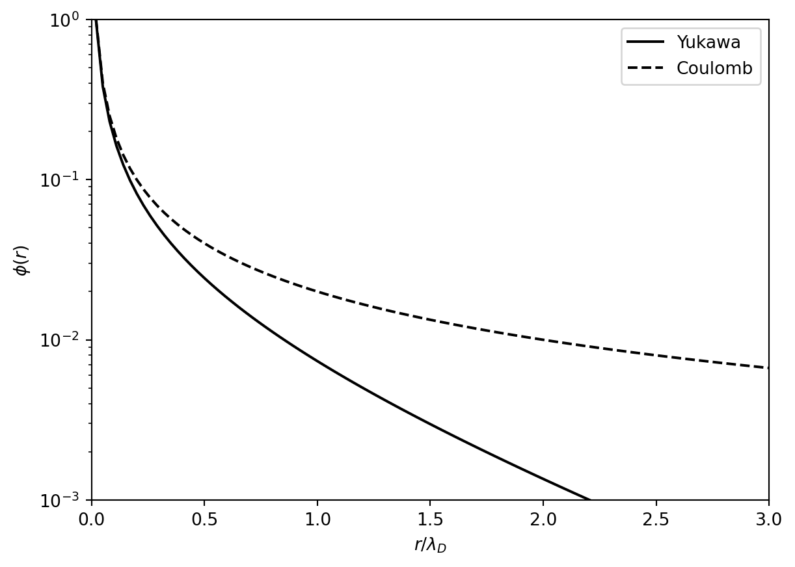

1 はじめに
地球近傍の宇宙空間には高温で希薄なプラズマが存在する．宇宙空間プラズマの多くが
- (熱エネルギー) \gg (クーロンポテンシャル) が満たされた，ほぼ完全電離状態
- 正電荷のイオンと負電荷の電子がほぼ同数で準中性状態
となっている．大雑把に言えばプラズマ \approx 電磁場と相互作用する流体である．
歴史的には太陽風と地球磁気圏の相互作用の理解から発展したが，現在ではより一般に宇宙におけるプラズマ(磁場)の果たす役割の重要性が認識されるようになっている．
1.1 プラズマの例
- 地球近傍
- 太陽・太陽風
- 地球・惑星の磁気圏および電離圏
- 天体プラズマ
- 原始惑星系円盤
- 星間物質や銀河間物質
- 高エネルギー天体近傍
- 実験室プラズマ
- 磁場閉じ込めプラズマ
- レーザープラズマ
対象によってパラメータは大きく異なり，例えば電離圏や原始惑星系円盤は弱電離プラズマ，高エネルギー天体近傍では相対論的プラズマになっているが，そのダイナミクスはプラズマ物理の考え方で理解できる．
1.2 Debye遮蔽
プラズマ中にテスト電荷Q (>0)を置くと，この電荷が作る静電ポテンシャルを打ち消すようにプラズマ中の電子が応答し，静電ポテンシャルはYukawa型のポテンシャル \phi (r) = \frac{1}{4\pi\epsilon_0} \frac{Q}{r} \exp \left( - \frac{r}{\lambda_D} \right) \qquad(1.1) となる．ここで \frac{1}{\lambda_D^2} \equiv \frac{n_0 e^2}{\epsilon_0 k_B T} で定義される \lambda_D をDebye長と呼ぶ．このポテンシャルでは遠方 r \gg \lambda_D ではCoulombポテンシャルよりも急速に減衰する( 図 1.1 参照)．これをDebye遮蔽と呼ぶ．
またDebye長と電子の熱運動に対応する速度(熱速度)v_{\rm th} = \sqrt{k_B T/m_e}を用いて定義される時間スケールは \frac{1}{T} = \frac{v_{\rm th}}{\lambda_{D}} = \sqrt{\frac{n_0 e^2}{\epsilon_0 m_e}} \equiv \omega_{pe} と書ける．ここで\omega_{pe}はプラズマ周波数と呼ばれる．これはテスト電荷Qの遮蔽が\sim \omega_{pe}^{-1}程度の時間で起こることを意味する．すなわち，プラズマは\omega_{pe}^{-1}よりも長い時間スケールでは電気的に中性とみなすことができる．このため，多くの場合においてプラズマは準中性状態にある．
Debye遮蔽はDebye球（半径がDebye長の球）中の粒子数 \Lambda \equiv n \lambda_D^3 が十分大きいときにのみ成り立つ．また \Lambda^{2/3} \approx \frac{\text{熱エネルギー}}{\text{ポテンシャルエネルギー}} \qquad(1.2) であることが簡単に分かる．\Lambdaはプラズマパラメータと呼ばれる量で，宇宙空間プラズマではほとんど場合において\Lambda \gg 1が成り立つ．
演習問題 1.1 電子を1次元流体と考え，流体の運動方程式 n_e m_e \frac{d v_e}{d t} = -n_e e E - \frac{\partial}{\partial x} p_e において， p_e = n_e k_B T ， T = {\rm const}, dv_e/dt \approx 0 (定常かつ静止した状態)を仮定すると，電子密度はBoltzmann分布 n_e \approx n_0 \exp \left( \frac{e \phi}{k_B T_e} \right) に従う．このことを示せ．
演習問題 1.2 Poisson方程式 \nabla^2 \phi = - \frac{\rho}{\epsilon_0} = - \frac{1}{\epsilon_0} \left[ e \left( n_i - n_e \right) + Q \delta (r) \right] で電子密度としてBoltzmann分布を，イオン密度としてn_i \approx n_0を仮定する．このとき 式 1.1 がPoisson方程式の解を与えることを確かめよ．
演習問題 1.3 プラズマパラメータ \Lambda = n \lambda_D^3 の定義を用いて，式 1.2 を確かめよ．
演習問題 1.4 地球軌道における太陽風 (n \sim 5 {\rm \, cm^{-3}}, T \sim 10^5 {\rm \, K}) のパラメータを用いてDebye長，プラズマ周波数，およびプラズマパラメータの値を概算せよ．
1.3 プラズマの自己無撞着性
電磁場はMaxwell方程式 \begin{aligned} \frac{1}{\epsilon_0} \frac{\partial \bm{E}}{\partial t} &= \nabla \times \bm{B} - \mu_0 \bm{J} \\ \frac{\partial \bm{B}}{\partial t} &=-\nabla \times \bm{E} \\ \nabla \cdot \bm{E} &= \frac{1}{\epsilon_0} \rho \\ \nabla \cdot \bm{B} &= 0 \end{aligned} に従って発展する．この電磁場に影響を受けたプラズマ中の荷電粒子が作る電荷と電流 \begin{aligned} \rho(x) &= \sum_{i} q_i \delta (x_i - x) \\ \bm{J}(x) &= \sum_{i} q_i \bm{v}_i \delta (x_i - x) \end{aligned} がMaxwell方程式に影響を与える．真空中のMaxwell方程式は線形であるが，プラズマが作る電荷・電流によるフィードバックまで考えると極度に非線形なシステムとなる．
1.4 磁気流体力学
プラズマの巨視的なダイナミクスを自己無撞着に記述する方程式系として，以下の磁気流体力学(MHD; Magnetohydrodynamics)方程式がよく用いられる． \begin{aligned} & \frac{\partial \rho}{\partial t} + \nabla \cdot \left( \rho \bm{v} \right) = 0, \\ & \rho \frac{d \bm{v}}{dt} = - \nabla p + \bm{J} \times \bm{B}, \\ & \frac{d}{dt} \left( \frac{p}{\rho^{\gamma}} \right) = 0, \\ & \frac{\partial \bm{B}}{\partial t} - \nabla \times \left( \bm{v} \times \bm{B} \right) = 0, \\ & \nabla \cdot \bm{B} = 0. \end{aligned}
ここではMHDは本題ではないので，以下に特徴を簡単に述べるにとどめる．
- 流体 + 外力としてのローレンツ力（\bm{J} \times \bm{B}）が働く．
- プラズマが完全導体のとき，磁場とプラズマは「凍結」している．
- ガス圧力と磁気圧力の比で定義されるプラズマベータ \beta = P/(B^2/2\mu_0) が重要なパラメータとなる．
演習問題 1.5 ローレンツ力は \bm{J} \times \bm{B} = \frac{\left( \bm{B} \cdot \nabla \right) \bm{B}}{\mu_0} - \nabla \left( \frac{B^2}{2 \mu_0} \right) と書き直せる．このことを示せ．ここで第1項，第2項の磁場に垂直な成分がそれぞれ磁気張力と磁気圧力勾配力を表す．
磁気流体力学波動
通常の（中性）流体力学方程式から得られる波動は音波のみであるのに対して，磁気流体力学では以下の3種類の波動が存在する． これらの波動は磁場の方向に対する伝播方向によって異なる位相速度を持つ．これはプラズマが異方性を持った媒質であることを意味する．
- シアAlfven波: 非圧縮(磁気張力が復元力)
- 速い磁気音波: \delta p_{g} \delta p_{m} > 0
- 遅い磁気音波: \delta p_{g} \delta p_{m} < 0
Friedrichsダイアグラム
磁気流体波動の異方性を表すために 図 1.2 や 図 1.3 のようなFreidrichsダイアグラムが用いられることがある．